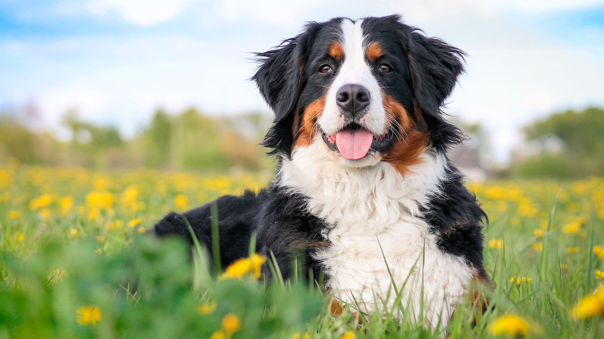
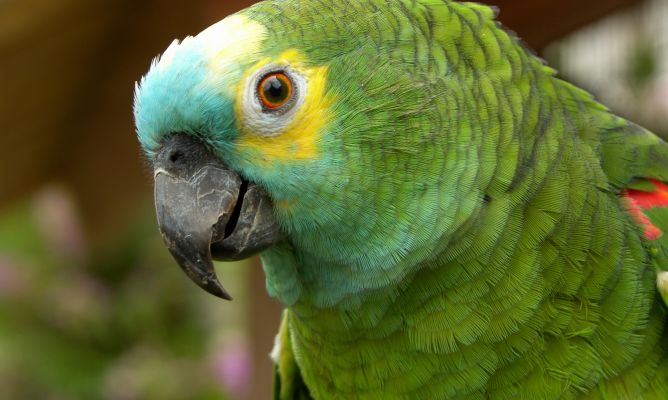

Bienvenidos a nuestro club
Este es un club para aprender acerca de los animales
Lo último de nuestro blog
Los animales necesitan cariño
Camina con tu mascota
Para muchos de nosotros las mascotas no son simples compañeros, son miembros de la familia.

Max



Sam